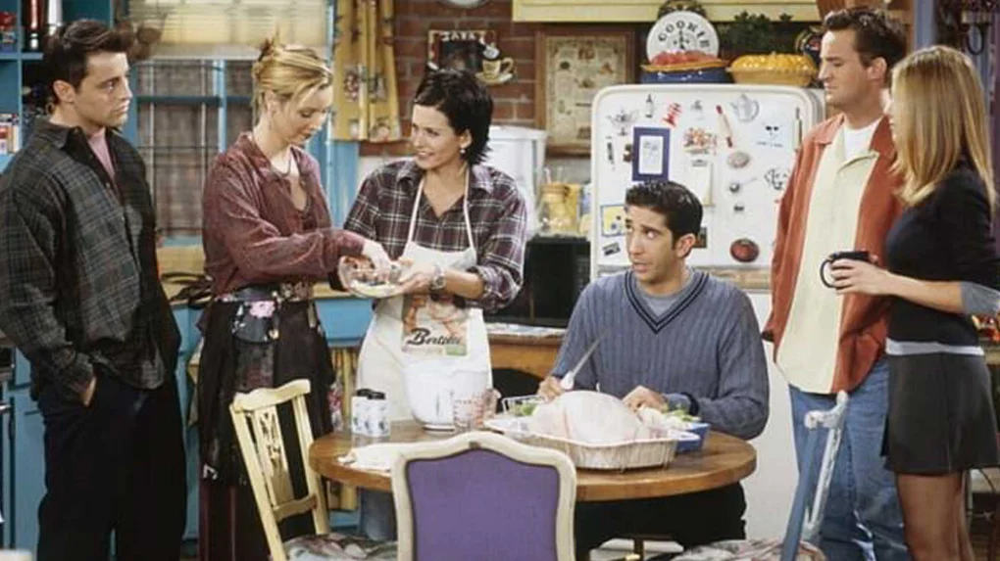

5 Fun Friends TV Show Facts You Never Knew
- Friends wasn't called Friends
- Phoebe's twin was originally on another show
- You can visit Central Perk in real life!
- . Marcel the monkey is a girl
- The show was filmed in LA.
Originally, different name suggestions included: Six of One, Friends Like Us and Insomnia Café. In the end, they went with the simplest option, and we can all agree its the best! Insomnia Café doesn't really roll off the tongue...
You probably remember Urusula as Phoebe's mean twin, who was always messing with her life. But you may not know her origin story! Lisa Kudrow played a waitress called Ursula on another sitcom called Mad About You. Since Lisa was appearing on both shows at the same time, and both were set in New York, the writers decided it would be funny to make Ursula a character on Friends too, as Phoebe's evil twin!

Central Perk (Like Central Park, geddit?) is sadly not a real cafe. BUT you can visit replicas of it, in Liverpool and China!